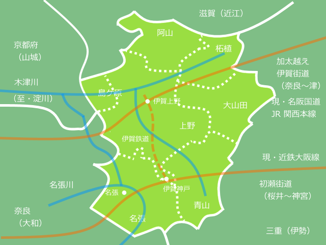
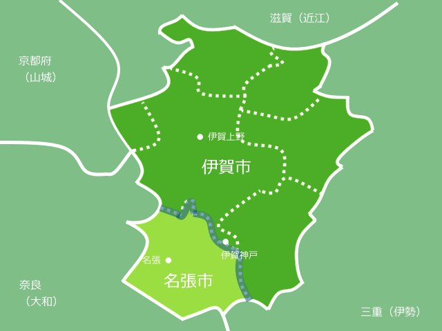

独断と偏見による簡単な伊賀の国の歴史
公開日：
伊賀の国は大和・山城・近江・伊勢に隣接する地域で、割と古くからそこそこ栄えていたらしい。ヤマト朝廷は尾張をはじめとする東国とも縁戚関係をもっていたが、おそらくこの地を往来したことだろう。名張と伊賀神戸の間にある美旗の地には古墳群があり（美旗古墳群）、往時を偲ばせる。
記紀によると、古代には垂仁天皇の皇子・息速別命（いこはやわけのみこと）が作った伊賀国造（いがのくにのみやつこ）がこの地にあった。皇子は病弱だったため皇位継承者から外され、伊賀国阿保（青山）に宮室を造って住んだという。のちに、この一族には阿保（あほ）姓が与えられたという*1。
壬申の乱では大海人皇子が隠（なばり、現在の名張）の地を抜けて、美濃に向かったことが記されている。
伊賀の国の成立
飛鳥時代、令制国設置に伴い、伊勢国が成立。その後、680年（天武天皇9年）に伊勢国から分立した。当初は2郡だったが、後に阿拝郡、山田郡、伊賀郡、名張郡の4郡が置かれた。

ここでちょっとザックリとした地理を抑えておきたい。
伊賀には木津川と名張川が流れているが、これは山城で合流し、さらに淀川へと注いでいる。また、伊勢方面を“加太越え”と呼ばれる難所が扼しており、基本的に関西方面とのつながりの方が強い。
一方、おおきな街道としては、北の上野を通る大和街道・伊賀街道と、南の名張を通る初瀬街道の二つが挙げられる。大和街道・伊賀街道は、現在の名阪国道とJR関西本線。初瀬街道は近鉄大阪線だと思えばいい。初瀬街道は桜井（古代ヤマトの中心地）と伊勢神宮（言わずと知れた皇祖神・天照大神を祀る神社）を結ぶ街道で、近鉄大阪線も元は“参宮急行電鉄”という会社だった。
こんな感じで、水系と街道が二つあることでもわかる通り、伊賀の国は2つの中心地をもっている。このことがのちに問題となってくるのだけど……それはとりあえず置いておこう。
中世の伊賀――忍者たちの自治――
奈良・平安時代を通じて、伊賀のほとんどは東大寺をはじめとする寺院の荘園となっていくが、これが次第に自立していく。室町時代になると仁木氏が守護として派遣されてきたが、まったくまとまりがつかず、後期になると隣接する近江六角氏や伊勢北畠氏の勢力も絡み、互いに睨み合うようになった。伊賀の国人は、貧しいこの国で血みどろの抗争を繰り広げたのである。

そんな状況に終止符を打ったのが、いわゆる“伊賀惣国一揆”だった。伊賀の国人は最有力の三家（百地氏、藤林氏、服部氏）とその他の強豪九家（総称して「伊賀十二人衆」）で治める合議体制を確立し、十一ヶ条からなる掟にしたがって周りの国々の干渉を退けた。
しかし、問題はどのようにして食を得るかということ。基本的に伊賀の国は土地が痩せていて、貧しかった。だからこそ争いが発生したのであり、平和を維持するためにはまず、食い扶持を得る必要があった。その方法の一つが、長い戦乱で鍛えた諜報能力を売ることだった。百地氏、藤林氏、服部氏が“伊賀上忍三家”としてスパイたちを統括し、それを諸国に派遣する。これが伊賀忍者の由来であるらしい。それでも生活は苦しく、最有力国人である服部氏からも伊賀を出奔して三河の松平家へ仕官したものが出るありさまだった。
魔王の来襲――天正伊賀の乱――
時は移り、世は戦国の時代。
尾張から興った織田氏は、やがて美濃を併合。伊勢・近江を抑え、京へと進出した。織田信長は伊勢の北畠家を下し、和睦の条件として次男・信雄と北畠具房の妹・雪姫を婚姻させ、信雄に北畠家を継がせた（北畠具豊、家督相続後は信意）。やがて信雄は北畠一門を謀殺し、伊勢を完全に掌握する。
そして天正7年（1579年）、信雄は伊賀の国をも手中に収めようと、信長に無断で八千の軍勢を動かし、伊賀国へ三方から侵入。しかし、伊賀十二人衆の前に大敗を喫した（第一次天正伊賀の乱）。信長は信雄に「親子の縁を切る」とまで書状で脅すほど激怒。しかし、カネ次第では平気で敵にも忍者を送り出す伊賀豪族をのさばらせるわけにもいかない。
そこで信長は天正9年（1581年）、再び織田信雄を総大将に5万の兵を伊賀に送り込む（第二次天正伊賀の乱）。伊勢地口からは本隊の信雄と津田信澄（信長の弟・織田信行の嫡男）、柘植口から丹羽長秀・滝川一益、玉滝口からは蒲生氏郷・脇坂安治、笠間口から筒井順慶、初瀬口より浅野長政、多羅尾口から堀秀政・多羅尾弘光が攻め込むという、まさに水も漏らさぬ布陣だ。伊賀方は比自山城を拠点に、夜襲をはじめとするゲリラ先鋒で織田方を幾度も撃破するが、さすがに六方からの方位には抗しえず、ついに柏原城へ追いつめられた。そして、ここでとうとう裏切り者を出し、城は陥落（交渉による和睦・開場ともいう）。伊賀の国衆は人口九万のうち、非戦闘員を含む実に三万が殺害。まさに根絶やしにされた。

- 作者: 司馬遼太郎
- 出版社/メーカー: 新潮社
- 発売日: 2015/04/03
- メディア: Kindle版
- この商品を含むブログ (1件) を見る
（司馬遼太郎氏の出世作『梟の城』は、この天正伊賀の乱の様子が少し描かれている）
本能寺の変のあと、織田方からの離反を画策するが勢いに欠け、反乱はしばらくして鎮圧されてしまう。しかし、服部半蔵の手引きで徳川家康の畿内脱出を助けた（伊賀越え）ことは、のちのち伊賀衆にとってプラスに働いたようだ。
藤堂家の支配――藤堂高吉の悲劇――
天正13年（1585年）、豊臣秀吉による国替えが行われ、大和が弟の秀長に与えられた。そして、もともと大和をおさめていた筒井氏が伊賀へ転封。当主の筒井定次は上野を根拠地とし、伊賀上野城を築いた。関ヶ原では東軍に味方し、所領を安堵。このまま筒井氏の伊賀支配が続くと思われたのだが……。
なぜか慶長13年（1608年）、幕命により突如として改易。理由は定かではないが、どうやら豊臣方と縁が深い大名が京都・大阪への要地を支配していることが、幕府にとって不都合であったらしい。実際、伊賀の国は外様ながら徳川家に近い藤堂家（藤堂高虎）に与えられる。
さて、藤堂高虎にははじめ、男児がいなかった。そこで、丹羽長秀の三男・仙丸を養子にもらった。
この千丸、実はもともと豊臣秀長の養子だった。実子のいない秀長が、長秀（あー、ややこしいな！）から貰い受けたのだ。しかし、秀吉は甥（秀長にとっても甥）の秀保を強引に秀長の後継ぎとする（秀長はちょっと怒ったらしいがよくわからない）。秀長は宙ぶらりんな立場になった千丸を憐れんだが、そこに助け舟を出したのが、当時、秀長の家臣であった高虎。自分も実子がいなかったのでちょうどいいとばかり引き取り、自分の名前から一文字与えて名を高吉とした。藤堂高吉は従五位下宮内少輔に叙任され（のちにこの家系は宮内家とも呼ばれる）、朝鮮の役や関ヶ原で活躍。伊予2万石を領した。高虎も、末頼もしい跡継ぎを得たと目を細めていたことだろう。
しかし、高虎の実子・高次が生まれると、状況は一変する。やっぱり実子に家督を継がせたくなる。よく考えると、豊臣秀長の養子であったという事実も、徳川の世では少々都合が悪い。そんなわけで、高吉は次第に冷遇されるようになった。
その後、高吉は大阪の役で長宗我部盛親隊を相手に活躍。高虎の死後、高吉は高次の家臣として仕えるが、伊賀国名張に移封（名張藤堂氏、藤堂宮内家）。名張川の治水や城下町の整備に努め、名君として親しまれた。
そんな因縁もあり、名張藤堂氏は藤堂氏本家とあまり仲が良くなかった。1734年（享保19年）には、当時の名張藤堂家当主・藤堂長熙が藩祖・高吉の実家である丹羽氏を通して幕府に独立を働きかけたが、これが本家の知るところとなり、名張藤堂家の有力な家臣が責任を取って切腹するという騒動が起こっている（享保騒動、名張騒動）。

そのせいだか何だか知らないけれど、今でも上野と名張はなんかしっくりこない感じ。とくに戦後は近鉄の通っている名張の方が大阪のベッドタウンとして栄えた一方、長く伊賀地方の政治の中心であった上野は JR と名阪国道が通るにもかかわらずパッとせず、財政再建団体に指定された時期があったほど（要するに今でいう夕張状態）。
まぁ、そんなこといちいち気にしてる住民はそんなに多くないみたいだけど、なんだかんだで、平成の大合併でも唯一、名張だけが“大伊賀市”に参加せず、独自の道を歩んでいる。
*1:関係ないが、小学校のころよく少年団のサッカーで青山のことは対戦したのだけど、散々アホ呼ばわりしてほんま済まなんだ